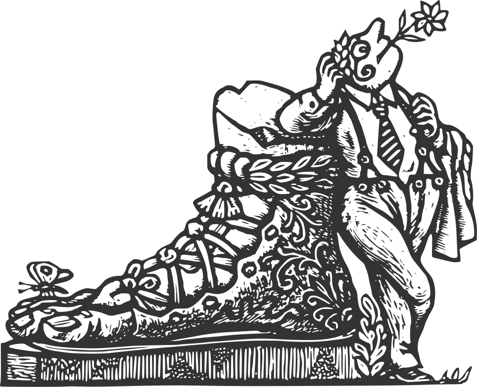

L’epitafi de la Tomba al Soldat Desconegut que hi ha al costat del Kremlin a Moscou, diu quelcom així: “El teu nom és desconegut, la teva gesta és immortal.” De la mateixa manera, visitant, també el teu nom és desconegut però, a diferència del soldat, la teva visita passarà absolutament inadvertida.
arnau.org pertany a una família, el cognom de la qual coincideix amb el nom del domini, —sense l’extensió, no cal dir-ho—, i els seus membres utilitzen el servei de correu electrònic, vinculat al mateix, per a comunicar-se entre ells i amb la resta del món (urbi et orbi).
Cal entendre aquest web, doncs, com un gest de cortesia cap els curiosos que el visiten. Res més.
